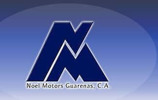

<div class="card mat-card">
    <div class="experiencia">
        <h1>Experiencia</h1>
        
        <ul class="experencia__ul">
            <a href="#" class="btn-right"><i class="fa fa-pencil"></i></a>
            <li>
            <h3>CONTABLE</h3>
            </li >
            <h4>TMS SISTEMAS 2620,C.A</h4> 
            <h5>abril 2009 - marzo 2019 </h5>
            <h6>Miranda, Venezuela</h6>
            <p>Elaboración de los Estados financieros, Declaración de Impuesto, Conciliaciones Bancarias. Pago a Proveedores. Compra y venta, Control de Inventarios.</p>
            <a href="#" class="btn-right"><i class="fa fa-pencil"></i></a>
            <li>               
                <h3>AUXILIAR ADMINISTRATIVO</h3></li>
                
            <h4>NOEL MOTORS GUARENAS</h4> 
            <h5>octubre 2005 - febrero 2009</h5>
            <h6>Miranda, Venezuela</h6>            
            <p>Registro de Cuenta en Libros de Ventas y Compras, Facturación, Inventario, Conciliación Bancaria, Vendedora del Plan Ford. Cajera. </p>
            <a href="#" class="btn-right"><i class="fa fa-pencil"></i></a>           
            <li>
                <h3>ASISTENTE ADMINISTRATIVO</h3></li>
                
                <h4>LEON MENDOZA & ASOCIADOS</h4>
                <h5>mayo 2002 - junio 2005</h5>
                <h6>Caracas, Venezuela</h6>
                <p>Encargada de Apoyar En Las Pruebas de Auditoria, Revisión de los Soportes a entrega el cliente para verificar la racionabilidad de las cuentas. Fui Asistente Administrativo, Encargada de Compra pago a proveedores y Organización de Eventos. </p>
                
            
        </ul>
    </div>
</div>